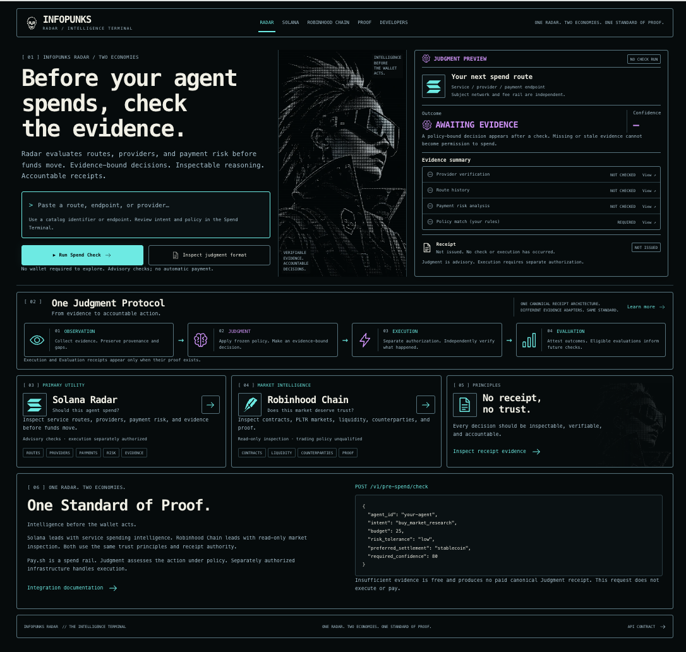
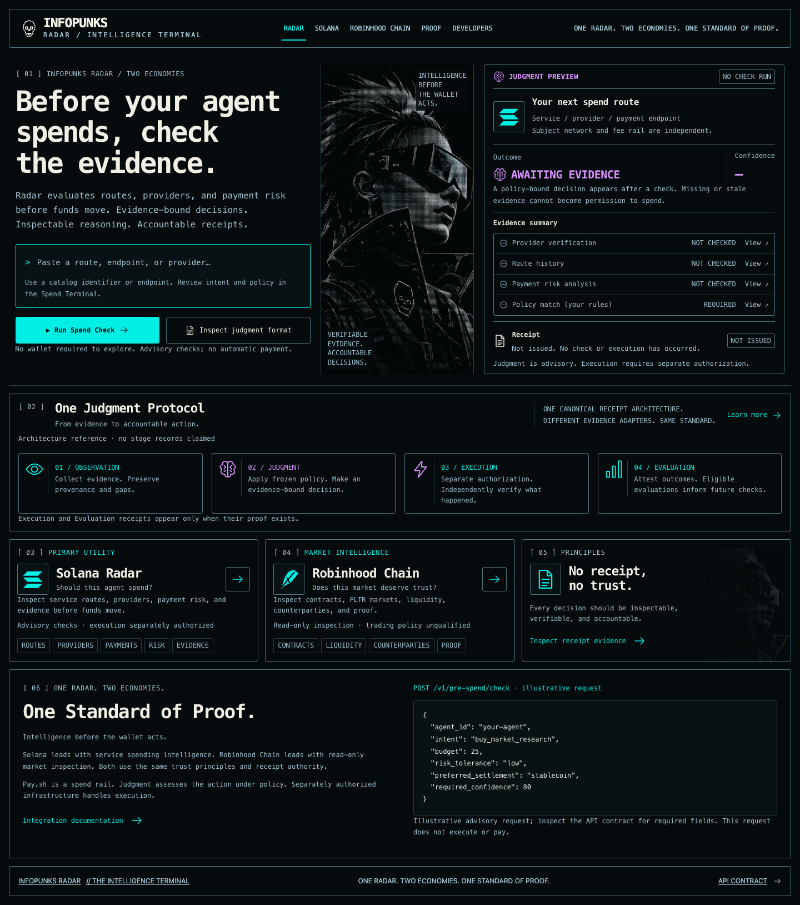
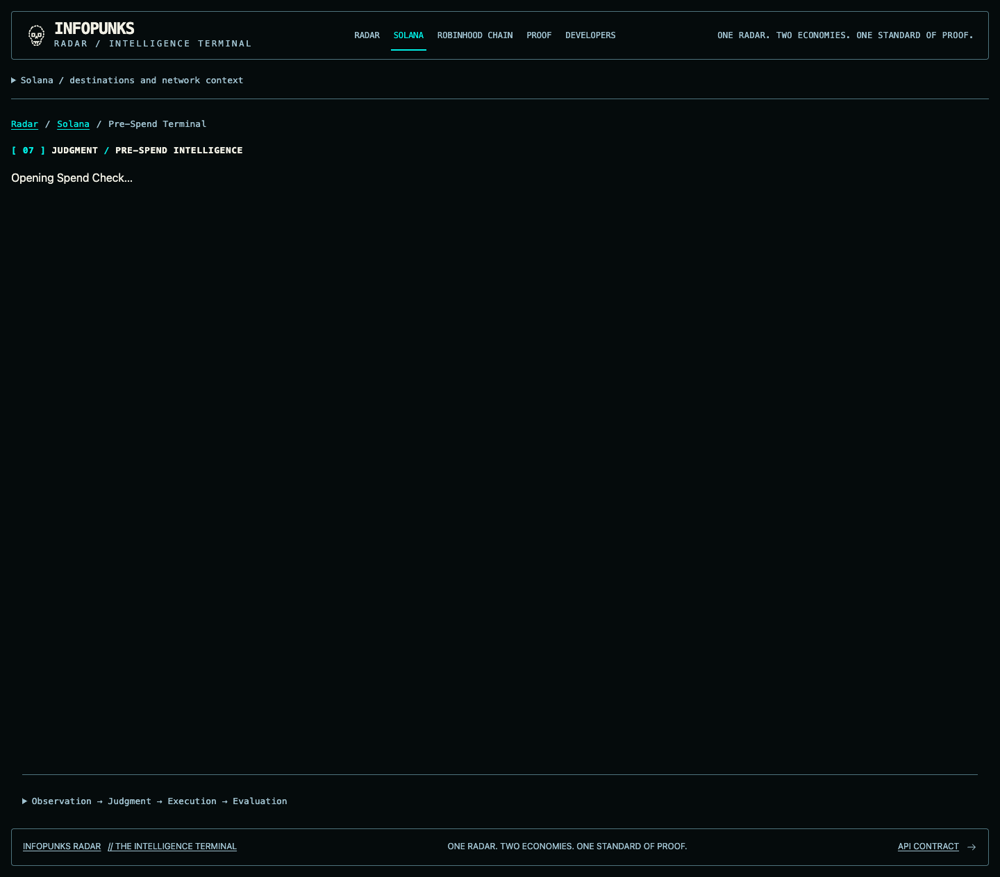
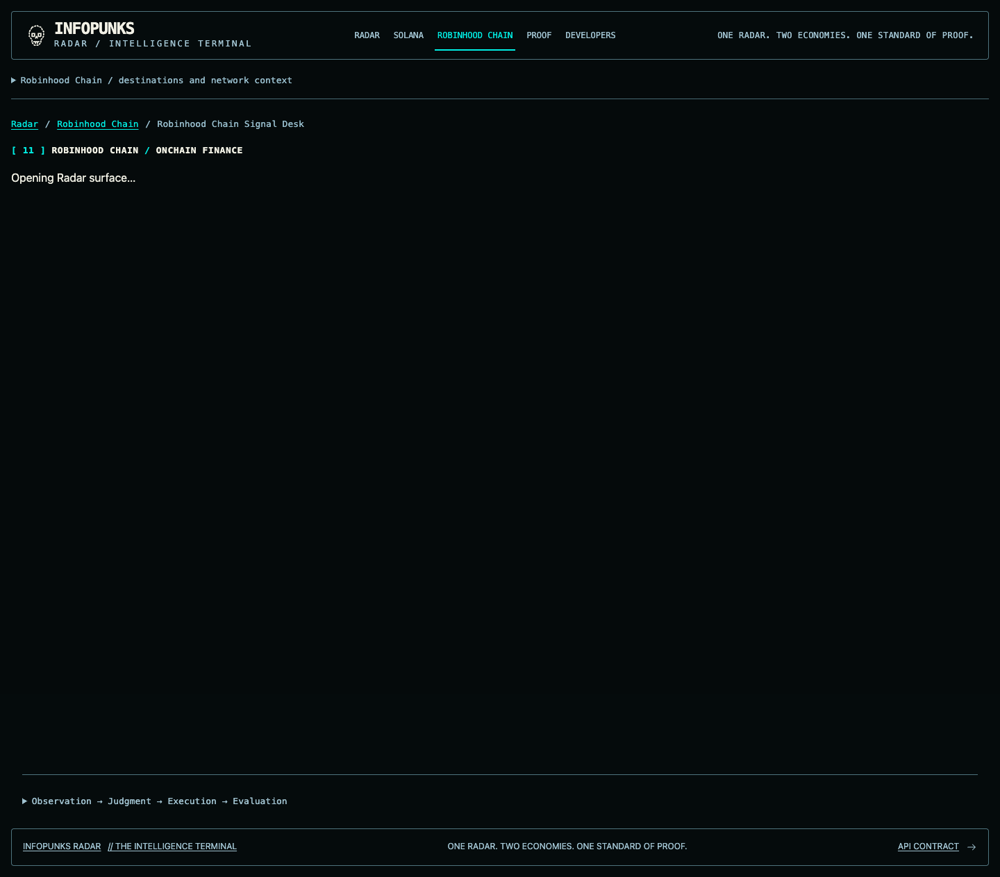
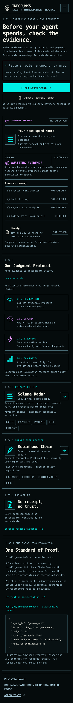
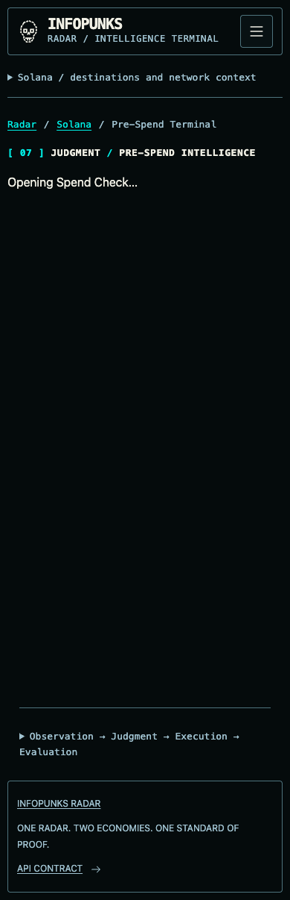

INFOPUNKS RADAR / secure forward integration
Visual gate: HOLD pending explicit human approval. Review only; no merge or deployment.
Checkpoint 1 / canonical homepage
Authoritative supplied reference
Forward-integrated homepage
Checkpoint 2 / one identity with distinct secure workflows
Current tenant-aware Spend Terminal
Robinhood read-only market intelligence
Mobile homepage
Mobile tenant-aware Spend Terminal
States shown are actual local test backend states; test evidence is synthetic and does not represent real payments or production outcomes.